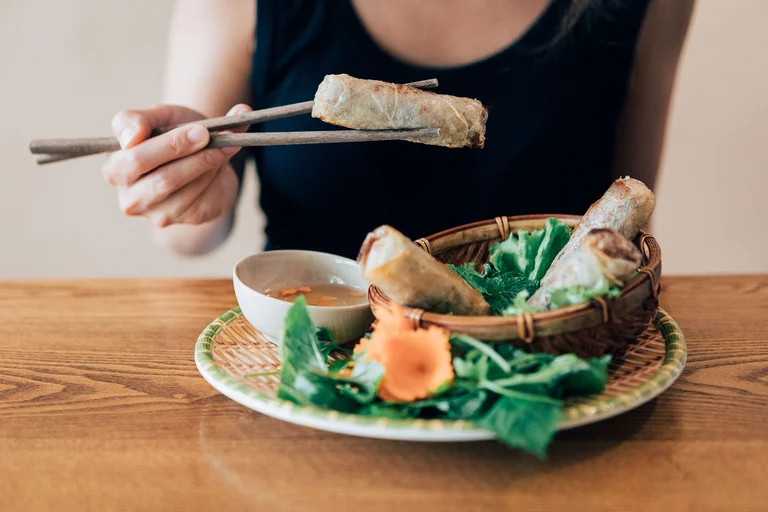

1 de Octubre de 2022
Dos chefs internacionales enseñan sus mejores recetas veggies
En el Día internacional del vegetarianismo, Infobae conversó con Narda Lepes y con Daniela Moreira, quienes mostraron los pasos para cocinar tres deliciosos platos de su autoría
Este sábado 1 de octubre es el Día internacional del vegetarianismo, una jornada promovida por una organización estadounidense en el año 1977 para reivindicar y difundir esta forma de vida y de alimentación basada en el cuidado del medioambiente y, sobre todo, de los animales con los que compartimos nuestro entorno natural.
Actualmente, hay un sinfín de facilidades para cocinar deliciosos platos vegetarianos en casa y deleitarnos con ingredientes que no provienen de procesos de daño a otras especies. En ese marco, Infobae dialogó con dos de las mejores cocineras del país para conocer sus secretos y sus fórmulas vegetarianas preferidas.
Narda Lepes, una chef reconocida no solo en Argentina sino también en América Latina; y Daniela Moreira, una profesional gastronómica que trabaja en Estados Unidos y que deleitó con sus platos nada menos que a la familia del presidente Joe Biden, compartieron tres recetas para comer sano y rico al calor del hogar.Véalas en nuestra recetas
Leer mas...

29 de Julio de 2022
Por qué cada vez más personas optan por el veganismo
En el mundo aumentó el número de personas que se deciden por dietas sin carne. Cuáles son sus motivos y cómo creció el mercado de este tipo de productos, tanto comida, ropa o cosméticos
El veganismo, es decir alimentarse únicamente con productos de origen vegetal, era hasta hace poco una opción de vida ignorada y hasta a veces objeto de burla o displicencia. Poco a poco, este grupo cada vez más grande personas fue imponiendo respeto por su elección, que se ha vuelvo una suerte de movimiento global, especialmente popular entre los jóvenes. En consecuencia, con el aumento del número de interesados en seguir esta corriente se ha generado un mercado de productos que cada vez mueve cifras de dinero más importantes.
“Estamos viviendo un boom”, afirmó Estela María Díaz Carmona, profesora de la Facultad de Ciencias Económicas y Empresariales de la Universidad Pontificia de Comillas (ICADE) y vegana. “Hay un crecimiento exponencial en casi todos los sectores, desde la venta de productos y restaurantes veganos a la cosmética, la moda y la investigación”.
Según el sitio Veganuary, una organización británica dedicada a la promoción del veganismo, el año pasado se movieron 14.880 millones de euros en el mercado de comida vegana en el mundo y para 2026 de estima que la cifra ascendería a 35.000 millones. En consonancia, ha venido cayendo el mercado de las carnes que en 2020 cayó un 3%.
Leer mas...

3 de Octubre de 2022
Frida Kahlo y su cocinera, una amistad hogareña que las cambió
La premiada escritora y periodista argentina Florencia Etcheves se aparta de la novela policial para contar una historia de amistad entre la célebre pintora mexicana y una de sus empleadas, relación que marcó para siempre el destino de ambas. Así empieza “La cocinera de Frida”.
Como suele suceder con ciertos artistas consagrados, a veces basta con decir un nombre de pila para que, de manera indiscutible, remita a una persona en particular. Es así que alcanza con decir “Frida” para que en la mente se dibuje el icónico y poblado par de cejas con el que, a casi 70 años de su muerte, todavía se recuerda a célebre pintora mexicana Frida Kahlo.
Autora de más de 150 cuadros en los que volcaba las peripecias de su supervivencia tras el accidente que la dejó paralítica, el legado de la artista no solo continúa incólume sino que, además, todavía protagoniza controversias como la del pasado 22 de septiembre, cuando el dueño de una de sus obras valuada en millones de dólares la quemó para venderla en NFT.
Con artistas de la talla de Kahlo, cuya obra resiste al paso del tiempo, suele llegar un punto en el que es casi imposible encontrar algo nuevo para contar. Es por eso que el nuevo libro de la escritora y periodista argentina Florencia Etcheves llega con tanta sorpresa. En La cocinera de Frida, editada por Planeta, la autora se corre de la novela policial con la que tiene acostumbrados a sus lectores para traer esta vez una novela histórica que logra recrear el lado más humano de Frida Kahlo.
Leer mas...
4 de octubre de 2022
Tres bares argentinos en la lista de los World’s 50 Best Bars
El bar palermitano que abrió en pandemia y se convirtió en un éxito recibió un reconocimiento mundial al ser elegido entre los mejores 50 bares del mundo
Los resultados de la nueva edición de los World’s 50 Best Bars confirman que Buenos Aires no solo es líder de coctelería en el continente sino que también se posicionó en el mundo. Aunque por momentos los productos pueden faltar, hay una inmensa búsqueda y creatividad a la hora de la creación de destilados y bebidas locales, como queda demostrado por este nuevo ranking.
En 2021 alcanzó el quinto puesto y por cuarto año consecutivo, Florería Atlántico mantuvo su presencia en el top 20, en la lista más reconocida del mundo de coctelería, quedando en el puesto 18. Estuvo bien acompañado por otros dos grandes bares de la ciudad de Buenos Aires: 3 Monos que sigue presente y rankeó 27 este año y la nueva incorporación de este año, Cochinchina en el puesto 42. Lejos de Buenos Aires, precisamente en Madrid, aunque con sangre argentina el Bar Salmón Gurú de Diego Cabrera también tuvo un lugar privilegiado, el puesto 15. El anuncio se hizo esta tarde en Barcelona en una ceremonia presencial en La Cúpula de las Arenas, ubicada en Arenas Mall. Para finalizar la ceremonia, el puesto número 1 fue para Paradiso de Barcelona.
Leer mas...

12 de junio, 2022
Truco para mantener tu lechuga fresca un mes en la heladera
Evita que la lechuga se arruine rápidamente con este consejo.
La lechuga es un alimento que se consume mejor fresco, por lo que suele dañarse rápido. Esto ocurre principalmente por su sensibilidad a la humedad y al frío, y su tendencia a congelarse.
Por eso, uno de los consejos más importantes para mantener la lechuga fresca es no exponerla directamente al frío de la nevera y no dejar que toque las paredes heladas.
La siguiente vez que compres una lechuga pon a prueba el siguiente truco casero. Te aseguramos que funcionará. Debes empezar picando la lechuga en tiras, para lo cual te puedes ayudar de unas tijeras para sostenerla, y un cuchillo para cortar.
Luego, lava la lechuga exhaustivamente para eliminar cualquier rastro de suciedad, y procede a secarla con una centrifugadora de lechuga, o un escurridor y papel de cocina.
El paso más importante, es guardar la lechuga picada en un tarro de cristal, cubriendo el borde con un papel de cocina seco. Este tarro se tapa y se conserva en la nevera boca abajo, tras lo cual la lechuga puede durar buena y crujiente por un mes.
Leer mas...

30 de mayo, 2022
Peligros de lavar el pollo:cómo evitar la intoxicación alimentaria
La enteritis por campylobacter es una de las causas más comunes de intoxicación alimentaria.
Mucha gente puede pensar que lavar el pollo es bueno. Nada más lejos de la realidad. Lavar el pollo crudo aumenta el riesgo de una intoxicación alimentaria.
La Agencia de Normas Alimentarias de Reino Unido (FSA por sus siglas en inglés) alertó ya hace tiempo que lavar el pollo antes de cocinarlo aumenta el riesgo de propagación de la bacteria campylobacter en las manos, las superficies de trabajo, la ropa y utensilios de cocina por la salpicadura de gotas de agua.
Sin embargo, muchas personas siguen cometiendo el mismo error.Cuando se pone el pollo debajo del grifo es habitual que se acabe salpicando todo lo que está alrededor. De esta manera, la bacteria puede acabar pasando a nuestro organismo a través, por ejemplo, de un cuchillo que teníamos cerca del fregadero.
No todo el mundo piensa en esto. De acuerdo con la FSA, un 44% de las personas en Reino Unido lava el pollo antes de cocinarlo. Las razones más citadas para hacerlo fueron para eliminar la suciedad o los gérmenes, o porque siempre lo habían hecho.
Leer mas...